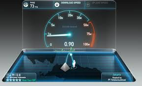

Cara mempercepat koneksi komputer di internet
20-Januari-2015 Views : 3,56789  Bagimana cara mempercepat koneksi Internet di komputer?. Mungkin pertanyaan ini yang sering muncul di benak kamu. Nah berikut cara mempercepat koneksi Internet. Tpi yang harus kamu ketahui terlebih dahulu yaitu, khususnya di indonesia, koneksi internet memang menjadi hal yang menyebalkan karena kurang cepat dan tidak stabil seiring berjalannya waktu. Lambatnya koneksi ini bisa diakibatkan koneksi dari provider yang memang lambat atau karena faktor teknis di perangkat yang anda gunakan.
Apabila anda mengalami koneksi internet yang lambat, Jangan buru2 dulu untuk menggantiprovider internet anda dengan yang lain. Silahkan coba cara mempercepat koneksi Internet di komputer dibawah ini untuk memaksimalkan koneksi internet agar lebih cepat.
1. Mengatur default bandwith usage di windows
Cara mempercepat koneksi Internet di komputer yang kedua yaitu mengatur default bandwith usage di windows.
Klik Start >> Run >> type gpedit.msc
Local Computer Policy >> Computer Configuration >> Administrative Templates >> Network >> QOS Packet Scheduler >> Limit Reservable Bandwidth
Double click pada Limit Reservable Bandwidth. Disana ditunjukkan bahwa string ini belum diatur (not configured), pada tab Explain ada penjelasan :
“By default, the Packet Scheduler limits the system to 20 percent of the bandwidth of a connection, but you can use this setting to override the default.
Jadi Trik yang kita lakukan adalah mendisablenya dengan mengeset nilainya menjadi NOL.
2. Optimasi DNS cache agar lebih cepat
Buka notepad dan copy paste kode di bawah ini :
[HKEY_LOCAL_MACHINESYSTEMCurrentControlSetServic es|DnscacheParameters]
"CacheHashTableBucketSize"=dword:00000001
"CacheHashTableSize"=dword:00000180
"MaxCacheEntryTtILimit"=dword:0000fa00
"MaxSOACacheEntryTtILimit"=dword:0000012dSimpan dengan nama dnscache.reg
Double click file ini di windows explorer, tekan "yes".
3. Optimasi untuk pengguna koneksi LAN
Berikut ini cara untuk mempercepat koneksi LAN :
* buka registry editor (start >> run >> ketik regedit)
* masuk ke HKEY_LOCAL_MACHINE\Software\Microsoft\Windows\Curr entVersion\Explorer\RemoteComputer\NameSpace dan DELETE key {D6277990-4C6A-11CF-8D87-00AA0060F5BF)
* Tutup registry editor dan restart windows.
4. Menggunakan Open DNS untuk koneksi internet
Cara mempercepat koneksi Internet di komputer yang terakhir yaitu menggunakan open DNS.
1. Klik Start
2. Klik Control Panel
3. Pilih Network & Internet Connection
4. Klik Network Connection
5. Klik Kanan Local Area Connection pilih Properties
6. Pilih Internet Protocol (TCP/IP) kemudian Klik Properties
7. Klik Use Following DNS Server
8. Isi Preferred DNS Server dengan angka : 208.67.222.222 atau DNS Google : 8.8.8.8.8
9. Isi Alternate DNS Server dengan angka : 208.67.220.220 atau DNS Google : 8.8.4.4
10. Kemudian Klik OK


{kind=link}